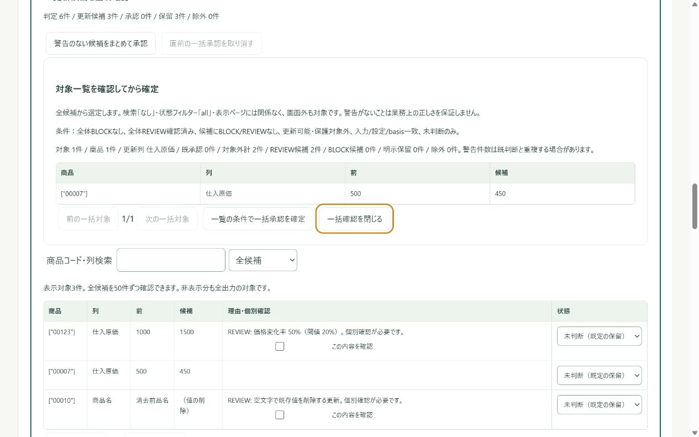

仕入価格の変更を確認し、
判断資料をExcelへ。
毎月、仕入先から届く価格表を前回の表や自社の商品マスタと照らし合わせる方へ。変更・空欄・重複を確認し、必要な変更だけを更新案へまとめます。元ファイルや外部サービスを直接書き換えません。
現在はPWAの一般公開前・未販売です。この公式サイトの公開はアプリの提供開始とは異なります。実機・納品の受入を準備中で、アプリURL・購入条件は未確定。購入・起動リンクは設置していません。
架空データで流れを見る値上げと値下げを見分け、確認が必要な変更を残す
例：ノートの仕入原価1,000円→1,500円は要確認。ペンの500円→450円は、設定した条件を満たす未判断候補の一覧で確認して承認します。品名の空欄による消去は保留。警告がないことは正しさの保証ではありません。


入力と成果物を見比べる
以下はすべて架空の5商品です。確認資料では警告なし1件だけを承認し、要確認2件を保留しています。新規・削除候補は自動適用しません。
- 前回の仕入価格表（CSV） / 今回の仕入価格表（CSV）
- 自社商品マスタの例（CSV） — 前回価格表とは別の入力例です。
- 価格改定確認資料のサンプル（Excel） — 前回→今回の比較と判断、保留・異常を含みます。
- 確認済みセルだけの更新案サンプル（CSV） — ペンの450円だけを反映。実サービスへの取込用CSVではありません。
CSVをExcelで直接開くと商品コードの先頭0や長い数字が変わる場合があります。CSV取込時にコード列を文字列として指定するか、確認資料Excelと照合してください。
Free / Founder
| Free | Founder（未販売） |
|---|---|
| 1つの表を整えてExcelへ | 繰り返す作業や価格改定の確認へ |
| 単体CSV/TSV/HTML/XLSX、表貼付け、編集・Undo・日本語整形・診断、Excel/CSV・コピー、保存・バックアップ・復元 | Freeの基本処理に加え、一括処理、Recipe、Snapshot比較・差分Excel、取引先別設定と月次価格／商品マスタ業務 |
| 最大2,000行 | 単体・結合最大20,000行。比較・XLSX入力・資料の個別制限あり |
Freeは無料での提供を予定。FounderはSTORESで買切り販売を検討していますが、販売方式の確認と納品の受入を準備中です。価格・発行までの時間・サポート期間・更新条件は未確定で、購入は受け付けていません。
購入前に知っておきたいこと
- PWAは別サイトのタブ・ログイン状態・DOMを自由に取得できません。ファイルと明示的なコピー＆貼付けが基本です。旧Chrome拡張のページ検出・ページ送り・動的追加取得・Scrollはありません。
- XLSXの数式・結合セル・暗号化・旧XLSは読み込めません。元の複製で確認済みの値にする等の準備が必要です。
- XLSXは専用のExcel入力と月次価格・商品マスタ業務で対応。従来の複数ファイル一括処理・取引先業務のファイル入力はCSV/TSV/HTMLで、XLSX一括入力には対応していません。
- 曖昧な商品コードの推測一致、粗利・総利益影響、自動値付け、外部ECへの直接更新・EC専用取込CSVには対応しません。
- 大きな表や確認資料には別々の上限があります。20,000行が全ての列・資料で使える保証ではありません。詳しい上限をご確認ください。
実務者の時短・購入価値・競合優位は未検証です。Chrome拡張版・Windowsアプリ版の開発／配布には戻りません。
提供開始後の利用手順
以下は準備中の導入案内です。現在アプリURLや購入リンクを案内するものではありません。
- 案内するPWAを対応ブラウザーで開き、Freeの架空サンプルや単体ファイルで入力・整形・Excel出力を確認します。
- Founderを選ぶ場合は、販売条件と対応範囲・納品までの時間を確認して購入します。購入直後の自動解放は約束していません。
- 後日案内する署名付きライセンスファイルをPWAの「ライセンスを読み込む」から選択します。FreeからFounderへ切り替えて利用する設計です。
- 元ファイル、バックアップ、ライセンスファイルを別の安全な場所へ保管します。再インストール・端末変更時はライセンスを再読込して復元します。
秘密鍵を利用者へ渡す方式ではなく、開発用切替を本番の購入権利とは扱いません。実機インストール・実Excel・本番納品の受入は未完了です。
詳しい操作・容量・安全性
月次価格改定確認の流れ
- 保存した業務を選び、今回・前回の価格表、または自社マスタと仕入先データを読み込みます。
- キー・列対応・価格の税区分／単位・更新禁止列を確認します。
- 値上げ・値下げ・新規・削除候補、重複・欠損を確認します。BLOCKがあれば更新案は作れません。
- 候補を承認・保留・除外します。警告のない未判断候補は全候補から対象一覧と件数を確認して一括承認し、直前操作のみ取り消せます。REVIEWの確認は迂回せず、明示保留・除外は変えません。
- 更新案CSV/XLSXと全件確認資料を保存します。外部反映は行いません。
読み込みと出力の上限
MBは1,000,000 bytes。CSV/TSV/HTMLは元ファイル1件5MB、文字コード変換後UTF-8も5MB。各内部表JSONは8MB・200列。XLSXは元ZIP5MB、展開合計20MB・1資材8MB、全シート矩形10万セル、見出し込み5,001行、データ最大5,000行（Free2,000行）です。非表示行も含み、完全なExcel表示の再現ではありません。
比較は対応列と追加税／単位列×新旧合計行数が10万セル以内、Recipe適用後の両入力JSONは20MB以内。確認資料はデータ部20万セル、追加8シートJSON合計20MB、各表8MB。表／資料の事前見積には安全の余裕を含み、上限内でも停止する場合があります。完成ZIPのサイズとは異なります。
データは端末内で処理
読み込んだ業務ファイル・表・判断内容を解析サーバーや外部AIへ自動送信しません。明示保存したデータはブラウザー内、出力・バックアップは利用者の選んだ場所で管理します。任意の問い合わせ・注文／ライセンス配送に必要な購入者情報は業務データとは別に扱います。プライバシーと利用条件をご確認ください。
保存・更新・困ったとき
初回の資材取得後はオフラインの基本処理を利用できます。初回・更新取得には通信が必要です。サイトデータ削除や端末故障に備えて保存・バックアップし、不調時にサイトデータを最初に消さないでください。
BLOCKは解除して進めず、原因行・列を確認し、元ファイルの複製を修正して再取込します。XLSXはシート・見出し行とエラー位置を確認。実ファイルを送らずに相談できるよう、サポートで案内しています。警告なしは業務上の正しさ、正式決裁、法的監査を保証しません。